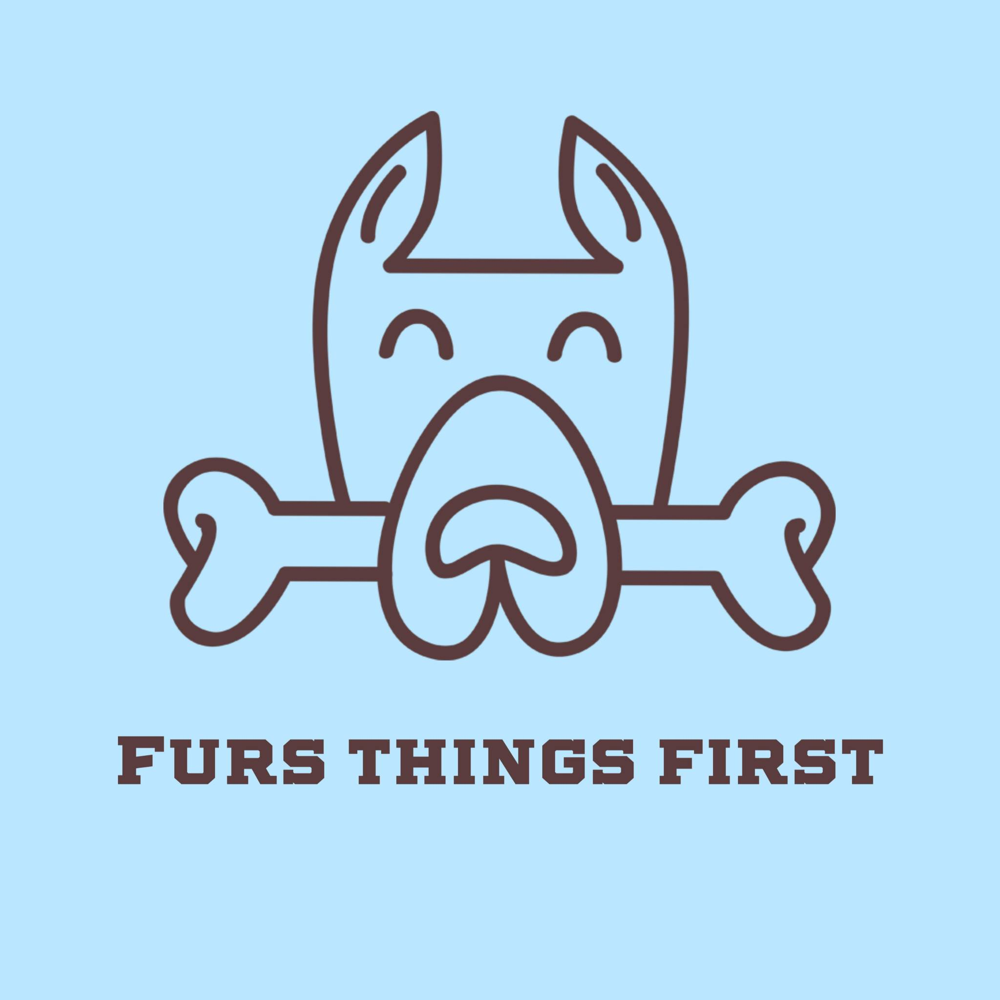

<mat-toolbar
  [ngStyle]="{
    backgroundColor: 'white',
    boxShadow: 'rgba(149, 157, 165, 0.2) 0px 8px 24px',
    position: 'fixed',
    zIndex: '1000',
  }"
>
  <button
    [matMenuTriggerFor]="menu"
    mat-icon-button
    class="example-icon"
    aria-label="Example icon-button with menu icon"
  >
    <mat-icon>menu</mat-icon>
  </button>
  
  <span
    id="title"
    routerLink="/furry-friends"
    [ngStyle]="{
      fontFamily: 'Caveat , cursive',
      fontSize: '1.4em',
      fontWeight: '700',
      marginLeft: '.4rem',
      cursor: 'pointer',
      
    }"
    >Furs Things First</span
  >
  <span class="example-spacer"></span>
  <a
    href="https://www.facebook.com/profile.php?id=61556219123886"
    mat-icon-button
    class="example-icon"
    aria-label="Example icon-button with menu icon"
  >
    <fa-icon [ngStyle]="{ color: '#3D3B40' }" [icon]="faFacebook"></fa-icon>
  </a>
  <a
    href="https://www.instagram.com/furs_things_first/"
    mat-icon-button
    aria-label="Example icon-button with menu icon"
  >
    <fa-icon [ngStyle]="{ color: '#3D3B40' }" [icon]="faInstagram"></fa-icon>
  </a>
</mat-toolbar>
<mat-menu #menu="matMenu">
  <button mat-menu-item routerLink="/furry-friends">
    <span [ngStyle]="{ color: '#3D3B40' }">Home</span>
  </button>
  <button mat-menu-item routerLink="/about">
    <span [ngStyle]="{ color: '#3D3B40' }">About us</span>
  </button>
  <button mat-menu-item (click)="openBottomSheet()">
    <span [ngStyle]="{ color: '#3D3B40' }">Contact</span>
  </button>
</mat-menu>
